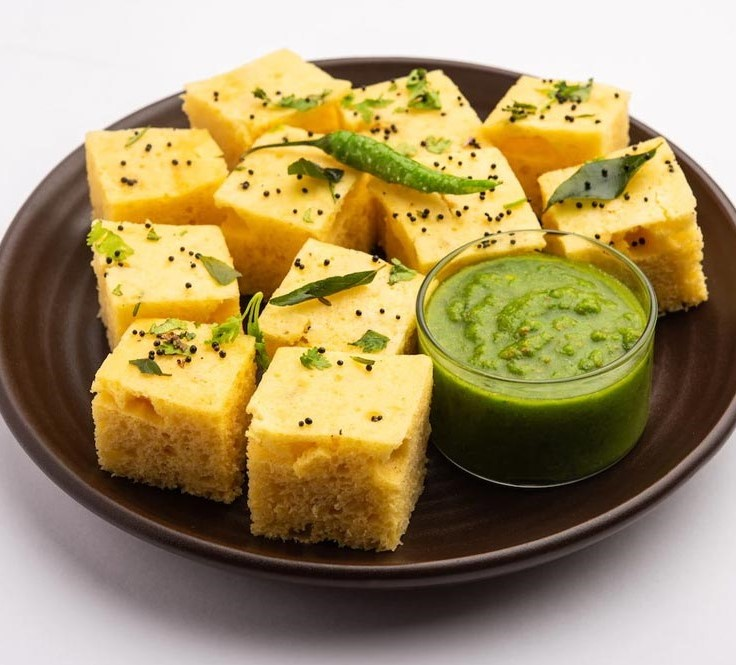

Our Menu
| Dish | Description | Price |
|---|---|---|
Sarson da SaagA traditional Punjabi dish featuring mustard greens and spices, simmered to flavorful goodness. |
₹140 | |
 |
Aloo ParathaFluffy whole wheat flatbread stuffed with spiced mashed potatoes, pan-fried to golden perfection. |
₹50/pc |
 |
Tandoori Paneer TikkaMarinated cubes of paneer grilled to perfection in a traditional clay oven, offering a smoky and spiced flavor. |
₹250 |
 |
Masala DosaThin rice crepe filled with a spiced mixture of potatoes, served with coconut chutney and tangy sambar. |
₹90 |
Chole BhatureSpiced chickpeas served alongside deep-fried bread, creating a delectable and hearty combination. |
₹110 | |
 |
Malai PaneerCreamy and succulent cubes of paneer (Indian cottage cheese) cooked in a rich and flavorful cream sauce. |
₹210 |
 |
Veg BiryaniFragrant basmati rice cooked with an assortment of vegetables and aromatic spices, creating a delightful one-pot meal. |
₹150 |
 |
Butter PaneerSoft paneer cubes in a luscious and creamy tomato-based curry, seasoned with aromatic spices. |
₹210 |
 |
Pav BhajiSpiced mashed vegetable curry served with buttered buns, creating a delicious and popular street food. |
₹60 |
Rajma ChawalRed kidney beans cooked in a thick and flavorful tomato-based gravy, served with steamed rice. |
₹60 | |
SamosaCrispy pastry filled with a savory mixture of spiced potatoes, peas, is a beloved Indian snack. |
₹25/pl | |
|  |
DhoklaLight and spongy steamed cake made from fermented rice and chickpea flour, garnished with mustard seeds and coriander. |
₹20/pc |